Abstract
We introduce 3D-DLP, a self-supervised object-centric representation learning model that decomposes scene-level RGB-D or voxel observations into a set of 3D latent particles. Building on the Deep Latent Particles (DLP) framework, each particle encodes disentangled attributes — 3D keypoint position, bounding box dimensions, and appearance features — and represents a distinct entity in the scene. The model learns interpretable per-particle segmentation maps through an end-to-end self-supervised reconstruction objective. On both simulated and real-world datasets, we demonstrate that the learned latent space is interpretable and controllable: by manipulating particle positions and decoding, we can generate novel scene configurations. Leveraging these compact 3D latent particles for downstream robotic manipulation improves performance over baselines that either lack explicit 3D information or rely on memory-intensive dense 3D inputs without object-centric structure.
Object-Centric 3D Decomposition
3D-DLP decomposes each RLBench scene into a set of interpretable 3D latent particles. The top row shows our reconstructed RGB voxel scene; the bottom row shows the corresponding per-particle foreground/background decomposition that emerges purely from self-supervised training.
RGB Reconstruction
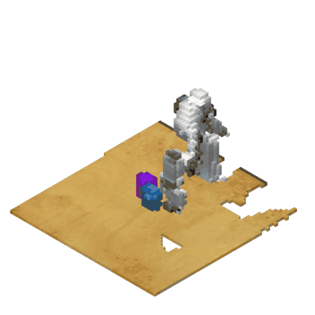
Close Jar
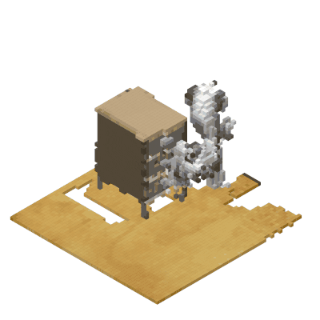
Open Drawer
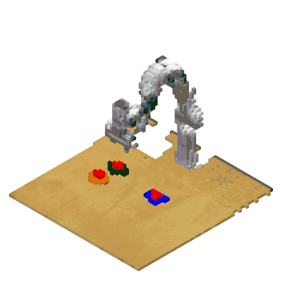
Push Buttons
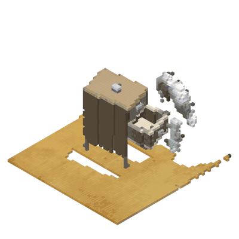
Put Item in Drawer
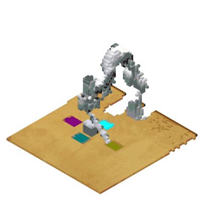
Reach and Drag
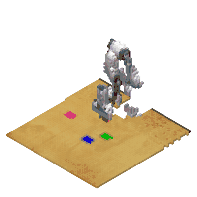
Slide Block to Target
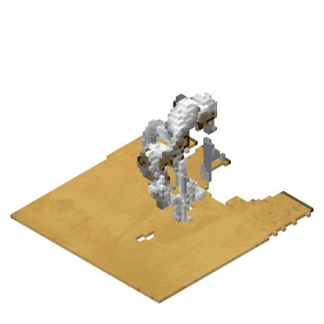
Turn Tap
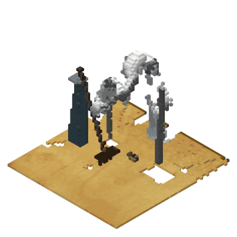
Sweep to Dustpan
Foreground / Background Decomposition
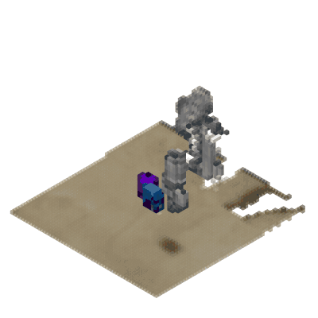
Close Jar
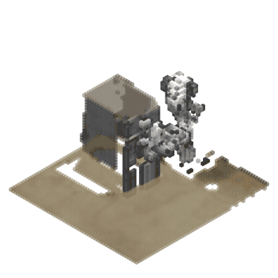
Open Drawer
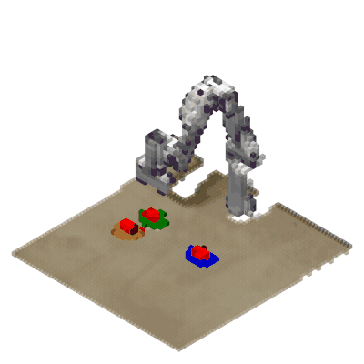
Push Buttons
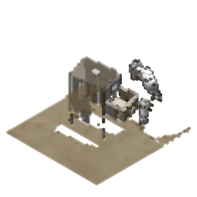
Put Item in Drawer
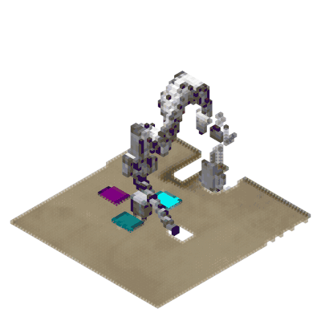
Reach and Drag
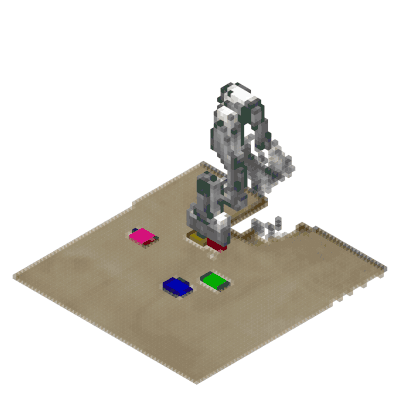
Slide Block to Target
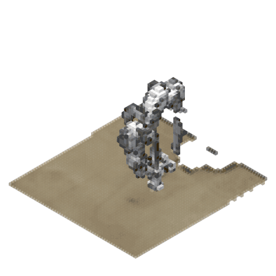
Turn Tap
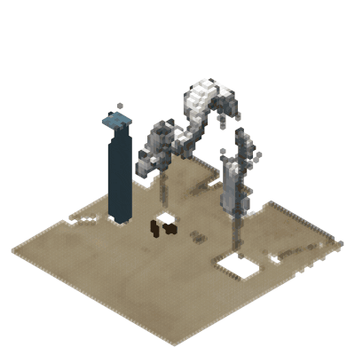
Sweep to Dustpan
Architecture
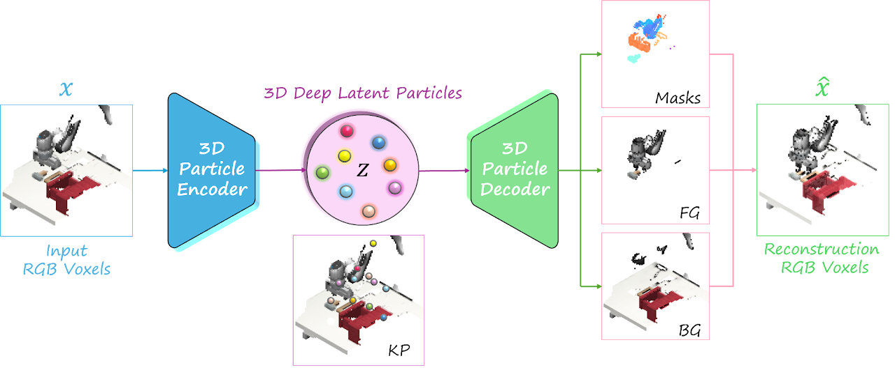
3D-DLP encodes RGB voxel observations into a set of latent particles via a K-means prior, attribute encoder, and 3D decoder with volumetric compositing.
Latent Space Controllability
By directly editing particle attributes (position, scale), we can generate novel scene configurations. Drag each slider to see the original scene versus the edited result.
Scene 1
Scene 2
Manipulation Performance
We isolate the value of 3D structure by swapping only the scene representation — 2D-DLP → 3D-DLP — inside the same entity-centric diffusion policy (EC-Diffuser). EquiDiff and PerAct use entirely different policy backbones and are shown as external references.
MimicGen
12 tasks · mean success rate
RLBench
10 tasks · mean success rate
Only 3D-DLP vs. 2D-DLP is a controlled representation swap (identical policy). EquiDiff and PerAct differ in policy architecture and are external references.
EC-Diffuser with 3D-DLP — Policy Rollouts
3D-DLP particles serve as compact state for an entity-centric diffusion policy across diverse manipulation tasks.
Hammer
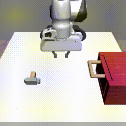
Three Piece Assembly
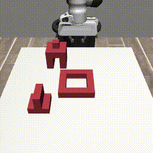
Mug Cleanup
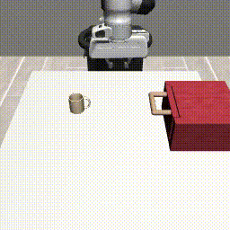
Square
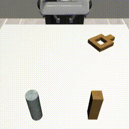
Ground Truth vs. Reconstruction
Drag each slider to compare ground-truth voxels with our 3D-DLP reconstruction.
BibTeX
@inproceedings{zhang20263ddlp,
title = {3D-DLP: Self-supervised 3D Object-centric Scene Representation Learning},
author = {Zhang, Ellina and Iyengar, Madhavan and Zadeh, Amir and Li, Chuan and Held, David and Pathak, Deepak and Daniel, Tal},
booktitle = {International Conference on Machine Learning (ICML)},
year = {2026}
}Acknowledgements
This work is built on top of Latent Particle World Models (ICLR 2026 Oral) by Tal Daniel et al., which itself extends the Deep Latent Particles (DLPv2 / DDLP) framework by Tal Daniel and Aviv Tamar. We thank the authors for releasing their implementations, on which our 3D extensions are based.